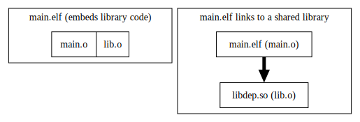
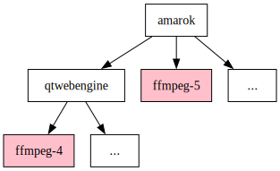
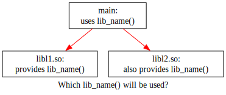
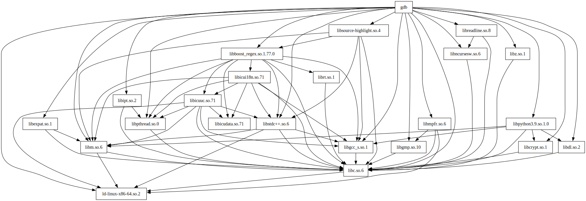
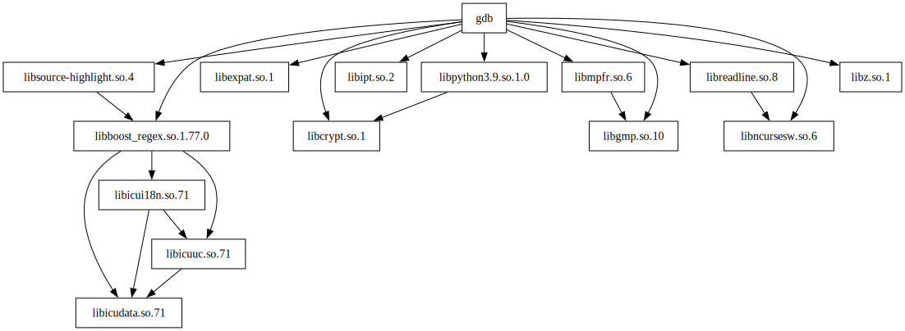
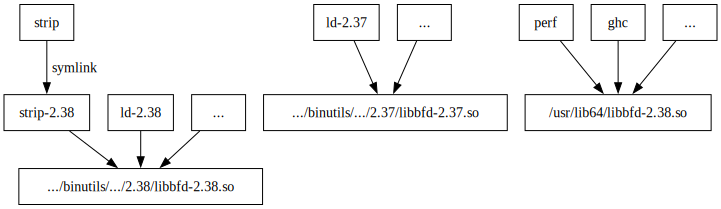
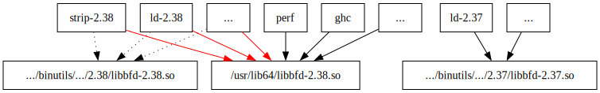
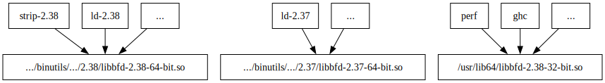

How do shared library collisions break?
background
Shared libraries are fun. The concept is simple in theory: we move a piece of code out of the main application into a separate (dynamically loadable) binary and nothing changes:

In practice we get two moving parts where each could be updated separately. People still don’t agree if shared libraries are a net win or a net loss as a concept :)
When you maintain both application and library as a single code base the difference does not really matter. Things get interesting when library starts it’s own life as a separate project and gets it’s own dependencies over time.
What if we want to use two different versions of the same library project within a single application. Say, use gtk-2 and gtk-3 together or ffmpeg-4 and ffmpeg-5.
You might even do it by accident by including two dependencies that rely on different ffmpeg versions:

Is it a safe combination? Can we just link against both versions of a library and be done with it? Let’s try!
toy example
We’ll need an executable and two libraries to play with. Library API provides a single function to tell us it’s name:
// $ cat lib.h
const char * lib_name (void);Library sources implement the API by returning pointer to source file name:
// $ cat lib1.c
#include "lib.h"
const char * lib_name (void) { return __FILE__; }// $ cat lib2.c
#include "lib.h"
const char * lib_name (void) { return __FILE__; }Main program:
// $ cat main.c
#include <stdio.h>
#include <stdlib.h>
#include <unistd.h>
#include "lib.h"
int main() {
/* important part: */
fprintf (stderr, "lib_name() = %s\n", lib_name());
/* library loading introspection: */
fprintf (stderr, "My address space:\n");
char cmd[1000];
/* search for code segments (should be at most one per loaded ELF) */
snprintf(cmd, sizeof (cmd), "grep 'r-x' /proc/%u/maps", getpid());
system(cmd);
}The important bit here is fprintf (stderr, “lib_name() = %s”, lib_name());. The rest is convenience debugging to see what libraries are loaded into address space.
What happens if we link main.c dynamically against both lib1.c and lib2.c together as external shared libraries?

Would linker complain? Would it pick first library? Or maybe the second one? It depends!
Let’s build shared libraries the simplest way possible and link our program against them:
$ mkdir -p l1 l2
# no SONAME
$ gcc -fPIC -shared lib1.c -o l1/libl1.so
$ gcc -fPIC -shared lib2.c -o l2/libl2.so
$ gcc main.c -o main1 -Ll1 -Ll2 -ll1 -ll2 -Wl,-rpath,'$ORIGIN/l1' -Wl,-rpath,'$ORIGIN/l2'
$ gcc main.c -o main2 -Ll1 -Ll2 -ll2 -ll1 -Wl,-rpath,'$ORIGIN/l1' -Wl,-rpath,'$ORIGIN/l2'Quiz question: what would these ./main1 and ./main2 programs print when executed?
Now let’s compare the results:
$ ./main1 | unnix
lib_name() = lib1.c
My address space:
00401000-00402000 r-xp 00001000 00:1b 1404344872 /home/slyfox/dev/c/shared-libs/main1
7f994d9e2000-7f994db4c000 r-xp 00028000 00:1b 1350927183 /<<NIX>>/glibc-2.34-210/lib/libc.so.6
7f994dbb9000-7f994dbba000 r-xp 00001000 00:1b 1404344871 /home/slyfox/dev/c/shared-libs/l2/libl2.so
7f994dbbe000-7f994dbbf000 r-xp 00001000 00:1b 1404344870 /home/slyfox/dev/c/shared-libs/l1/libl1.so
7f994dbc5000-7f994dbea000 r-xp 00001000 00:1b 1350927176 /<<NIX>>/glibc-2.34-210/lib/ld-linux-x86-64.so.2
7fff98b52000-7fff98b54000 r-xp 00000000 00:00 0 [vdso]
$ ./main2 | unnix
lib_name() = lib2.c
My address space:
00401000-00402000 r-xp 00001000 00:1b 1404344873 /home/slyfox/dev/c/shared-libs/main2
7f95c8773000-7f95c88dd000 r-xp 00028000 00:1b 1350927183 /<<NIX>>/glibc-2.34-210/lib/libc.so.6
7f95c894a000-7f95c894b000 r-xp 00001000 00:1b 1404344870 /home/slyfox/dev/c/shared-libs/l1/libl1.so
7f95c894f000-7f95c8950000 r-xp 00001000 00:1b 1404344871 /home/slyfox/dev/c/shared-libs/l2/libl2.so
7f95c8956000-7f95c897b000 r-xp 00001000 00:1b 1350927176 /<<NIX>>/glibc-2.34-210/lib/ld-linux-x86-64.so.2
7ffdbb255000-7ffdbb257000 r-xp 00000000 00:00 0 [vdso]Note: lib_name() returns two very different results. And that is for a program that is linked against the same set of libraries and headers in both cases!
A few more observations:
- ld did not complain about lib_name() presence in both libl1.so and libl2.so.
- Both libraries are loaded into address space (visible in address space dumps).
- ./main{1,2} also did not complain about lib_name() presence in both libl1.so and libl2.so.
- Libraries happen to be loaded in order specified by -l options.
Now let’s pretend that libl1.so and libl2.so don’t have material difference and implement identical ABI and semantics. On ELF platforms ABI and semantics are usualy reflected by a DT_SONAME tag attached to a library. We can assign SONAME to built library with -Wl,-soname,… flag. Let’s specify identical SONAME to both libraries (I also had to create symlinks to SONAME name):
$ mkdir -p l1 l2
# same SONAME
$ gcc -fPIC -shared lib1.c -o l1/libl1.so -Wl,-soname,libname.so.1
$ ln -s libl1.so l1/libname.so.1
$ gcc -fPIC -shared lib2.c -o l2/libl2.so -Wl,-soname,libname.so.1
$ ln -s libl2.so l2/libname.so.1
$ gcc main.c -o main1 -Ll1 -Ll2 -ll1 -ll2 -Wl,-rpath,'$ORIGIN/l1' -Wl,-rpath,'$ORIGIN/l2'
$ gcc main.c -o main2 -Ll1 -Ll2 -ll1 -ll2 -Wl,-rpath,'$ORIGIN/l2' -Wl,-rpath,'$ORIGIN/l1'Quiz question: how would these result differ compared to previous run?
Comparing the results again:
$ ./main1 | unnix
lib_name() = lib1.c
My address space:
00401000-00402000 r-xp 00001000 00:1b 1404345186 /home/slyfox/dev/c/shared-libs/main1
7f3bf33c3000-7f3bf352d000 r-xp 00028000 00:1b 1350927183 /<<NIX>>/glibc-2.34-210/lib/libc.so.6
7f3bf359a000-7f3bf359b000 r-xp 00001000 00:1b 1404345184 /home/slyfox/dev/c/shared-libs/l1/libl1.so
7f3bf35a1000-7f3bf35c6000 r-xp 00001000 00:1b 1350927176 /<<NIX>>/glibc-2.34-210/lib/ld-linux-x86-64.so.2
7ffcb5934000-7ffcb5936000 r-xp 00000000 00:00 0 [vdso]
$ ./main2 | unnix
lib_name() = lib2.c
My address space:
00401000-00402000 r-xp 00001000 00:1b 1404345187 /home/slyfox/dev/c/shared-libs/main2
7f2c1a48d000-7f2c1a5f7000 r-xp 00028000 00:1b 1350927183 /<<NIX>>/glibc-2.34-210/lib/libc.so.6
7f2c1a664000-7f2c1a665000 r-xp 00001000 00:1b 1404345185 /home/slyfox/dev/c/shared-libs/l2/libl2.so
7f2c1a66b000-7f2c1a690000 r-xp 00001000 00:1b 1350927176 /<<NIX>>/glibc-2.34-210/lib/ld-linux-x86-64.so.2
7ffd7c1ba000-7ffd7c1bc000 r-xp 00000000 00:00 0 [vdso]Note:
- Only one example of a library with a specified SONAME is loaded into memory: either libl1.so or libl2.so, but never both.
- First library is loaded as specified by DT_RUNPATH tag (not by -l option).
Library order matters materially only if a symbol is present in multiple shared libraries (a symbol collision is present). Otherwise you don’t have to worry about it.
Another important assumption here is that lib.h is identical for both libl1.so and libl2.so. It’s not always the case for more complex scenarios: ffmpeg and gtk certainly change their API and data structures across major releases (or even in different build configurations for the same library release).
diamond dependency trees
Is it a frequent problem to get a mix of libraries like that in a single process? Or it’s a purely hypothetical problem not worth worrying about?
Let’s pick gdb executable (command line debugger) as an example.
Quiz question: how many libraries does gdb use as dependencies. Should it be just libc? Maybe ncurses as well?
ELF files have DT_NEEDED entries in .dynamic section. Those list all immediate shared library dependencies. We can dump DT_NEEDED entries with tools like objdump, readelf, scanelf, patchelf and many others. I’ll use patchelf:
$ patchelf --print-needed `which gdb` | nl
1 libreadline.so.8
2 libz.so.1
3 libncursesw.so.6
4 libpython3.9.so.1.0
5 libdl.so.2
6 libcrypt.so.1
7 libm.so.6
8 libexpat.so.1
9 libipt.so.2
10 libmpfr.so.6
11 libgmp.so.10
12 libsource-highlight.so.4
13 libboost_regex.so.1.77.0
14 libstdc++.so.6
15 libgcc_s.so.1
16 libpthread.so.0
17 libc.so.6
18 ld-linux-x86-64.so.218 immediate libraries! Some of them have their own dependencies. We can dump the whole tree with lddtree:
$ lddtree `which gdb` | unnix | nl
lddtree `which gdb` | unnix | nl
1 gdb => /run/current-system/sw/bin/gdb (interpreter => /<<NIX>>/glibc-2.34-210/lib/ld-linux-x86-64.so.2)
2 libreadline.so.8 => /<<NIX>>/readline-8.1p2/lib/libreadline.so.8
3 libz.so.1 => /<<NIX>>/zlib-1.2.12/lib/libz.so.1
4 libncursesw.so.6 => /<<NIX>>/ncurses-6.3-p20220507/lib/libncursesw.so.6
5 libpython3.9.so.1.0 => /<<NIX>>/python3-3.9.13/lib/libpython3.9.so.1.0
6 libdl.so.2 => /<<NIX>>/glibc-2.34-210/lib/libdl.so.2
7 libcrypt.so.1 => /<<NIX>>/glibc-2.34-210/lib/libcrypt.so.1
8 libm.so.6 => /<<NIX>>/glibc-2.34-210/lib/libm.so.6
9 libexpat.so.1 => /<<NIX>>/expat-2.4.8/lib/libexpat.so.1
10 libipt.so.2 => /<<NIX>>/libipt-2.0.4/lib/libipt.so.2
11 libmpfr.so.6 => /<<NIX>>/mpfr-4.1.0/lib/libmpfr.so.6
12 libgmp.so.10 => /<<NIX>>/gmp-with-cxx-6.2.1/lib/libgmp.so.10
13 libsource-highlight.so.4 => /<<NIX>>/source-highlight-3.1.9/lib/libsource-highlight.so.4
14 libboost_regex.so.1.77.0 => /<<NIX>>/boost-1.77.0/lib/libboost_regex.so.1.77.0
15 librt.so.1 => /<<NIX>>/glibc-2.34-210/lib/librt.so.1
16 libicudata.so.71 => /<<NIX>>/icu4c-71.1/lib/libicudata.so.71
17 libicui18n.so.71 => /<<NIX>>/icu4c-71.1/lib/libicui18n.so.71
18 libicuuc.so.71 => /<<NIX>>/icu4c-71.1/lib/libicuuc.so.71
19 libstdc++.so.6 => /<<NIX>>/gcc-11.3.0-lib/lib/libstdc++.so.6
20 libgcc_s.so.1 => /<<NIX>>/glibc-2.34-210/lib/libgcc_s.so.1
21 libpthread.so.0 => /<<NIX>>/glibc-2.34-210/lib/libpthread.so.0
22 libc.so.6 => /<<NIX>>/glibc-2.34-210/lib/libc.so.6
23 ld-linux-x86-64.so.2 => /<<NIX>>/glibc-2.34-210/lib/ld-linux-x86-64.so.2Just 4 more libraries added by boost internals: libboost_regex.so.1.77.0 -> librt.so.1, libicudata.so.71, libicui18n.so.71, libicuuc.so.71.
From lddtree output it might look like it’s a rare occasion when shared libraries have their owne dependencies. That is misleading: lddtree hides already printed entries by default.
Quiz question: guess how many dependencies does gdb have if we consider all the duplicates.
We’ll use lddtree -a option to answer that question:
$ lddtree -a `which gdb` | unnix | nl
1 gdb => /run/current-system/sw/bin/gdb (interpreter => /<<NIX>>/glibc-2.34-210/lib/ld-linux-x86-64.so.2)
2 libreadline.so.8 => /<<NIX>>/readline-8.1p2/lib/libreadline.so.8
3 libncursesw.so.6 => /<<NIX>>/ncurses-6.3-p20220507/lib/libncursesw.so.6
4 libc.so.6 => /<<NIX>>/glibc-2.34-210/lib/libc.so.6
5 ld-linux-x86-64.so.2 => /<<NIX>>/glibc-2.34-210/lib/ld-linux-x86-64.so.2
6 libc.so.6 => /<<NIX>>/glibc-2.34-210/lib/libc.so.6
7 ld-linux-x86-64.so.2 => /<<NIX>>/glibc-2.34-210/lib/ld-linux-x86-64.so.2
8 libz.so.1 => /<<NIX>>/zlib-1.2.12/lib/libz.so.1
9 libc.so.6 => /<<NIX>>/glibc-2.34-210/lib/libc.so.6
10 ld-linux-x86-64.so.2 => /<<NIX>>/glibc-2.34-210/lib/ld-linux-x86-64.so.2
11 libncursesw.so.6 => /<<NIX>>/ncurses-6.3-p20220507/lib/libncursesw.so.6
12 libc.so.6 => /<<NIX>>/glibc-2.34-210/lib/libc.so.6
13 ld-linux-x86-64.so.2 => /<<NIX>>/glibc-2.34-210/lib/ld-linux-x86-64.so.2
14 libpython3.9.so.1.0 => /<<NIX>>/python3-3.9.13/lib/libpython3.9.so.1.0
15 libdl.so.2 => /<<NIX>>/glibc-2.34-210/lib/libdl.so.2
16 libc.so.6 => not found
17 libcrypt.so.1 => /<<NIX>>/glibc-2.34-210/lib/libcrypt.so.1
18 libc.so.6 => not found
...
263 libc.so.6 => /<<NIX>>/glibc-2.34-210/lib/libc.so.6
264 ld-linux-x86-64.so.2 => /<<NIX>>/glibc-2.34-210/lib/ld-linux-x86-64.so.2
265 ld-linux-x86-64.so.2 => /<<NIX>>/glibc-2.34-210/lib/ld-linux-x86-64.so.2265! It’s more than 10x compared to the output without duplicates. A thing to note here is that libc.so.6 is a frequent guest here. The 265 number is also inflated as many subtrees repeat multiple times here.
If we use something more heavyweight like i3 window manager we’ll get even bigger dependency tree:
$ lddtree `which i3` | wc -l
61
$ lddtree -a `which i3` | wc -l
1528Let’s draw gdb dependencies as a graph. I find the result less scary:

OK, it’s still unreadable.
Let’s remove all the glibc and gcc dependencies. They are present almost everywhere and clutter our graph. Here is the result of graph with noise removed:

Now it should be more obvious what gdb usually uses.
Diamond dependencies are the ones that have more than one input arrow: they cause dependency graph to be a graph instead of a tree.
Another way to look at it applied to library dependencies: diamond dependencies have more than one path in the graph from dependency root.
For example libncursesw.so.6 can be reached via two distinct paths:
- gdb -> libncursesw.so.6 (direct dependency)
- gdb -> libreadline.so.8 -> libncursesw.so.6 (indirect dependency)
From the toy example above we know that the same library does not get loaded multiple times if the absolute library path is the same.
Problems happen when such a diamond dependency is slightly different in two branches. There are many ways to break this diamond by accident. The most popular one is to have slightly different SONAMEs in two branches:
To make it work at all libfoo.so.1 and libfoo.so.2 need to have no colliding symbols or make this mix and match work via other means. Most C libraries don’t handle such coexistence. They assume that everyone can update to libfoo.so.2 and libfoo.so.1 would never compete with it:
Example failures
Unfortunately nothing prevents such inconsistent diamonds with a library version mix to appear. We just did it ourselves in our toy example. How come do we not get into that state all the time? Or maybe we do?
Normally distributions try hard to avoid such version mix by not providing two versions of a library at any point in time: there are no two glibc version installed, no two ffmpeg versions present and so on.
But to each rule there is an exception: not all applications have migrated from python2 to python3, some applications are still on gtk-2, most on gtk-3 and some are already on gtk-4. In these cases you might find all these libraries in your system. Their presence might create false confidence that it’s a safe setup. It is not.
Here are a few examples I saw the past:
gdb and tinfo/tinfow
This example is based on https://bugs.gentoo.org/669096 where gdb crashed at start. ncurses provides a few flavours of roughtly the same library with slightly different APIs: ncurses (no unicode support) and ncursesw (has unicode support). Sometimes distributions also enable split-library version of ncurses: ncursesw.so+tinfow.so and ncurses.so+tinfo.so.
In 2022 you would normally use ncursesw library everywhere (or ncursesw.so+tinfow.so everywhere in distributions with split setup).
Due to a minor configure.ac glitch gdb managed to pull in the following library dependency graph:
$ lddtree /usr/bin/gdb
/usr/bin/gdb (interpreter => /lib64/ld-linux-x86-64.so.2)
libtinfo.so.6 => /lib64/libtinfo.so.6
libreadline.so.7 => /lib64/libreadline.so.7
libncurses.so.6 => /lib64/libncurses.so.6
libncursesw.so.6 => /lib64/libncursesw.so.6
libtinfow.so.6 => /lib64/libtinfow.so.6
...See the problem already? Picture form might help a bit:
I see two problems:
- unicode and non-unicode flavors are both present: ncurses.so + ncursesw.so
- unicode and non-unicode parts: ncursesw.so + tinfo.so (or ncursesw.so + tinfow.so)
libncursesw.so.6 and libncurses.so.6 export the same symbol names. That on it’s own might work. But ABI assumptions around private data structures in w and non-w librarues are different. For example WINDOWLIST structure has different size and has extra fields:
// Somewhere in ncurses/curses.priv.h
// ...
struct _win_list {
struct _win_list *next;
SCREEN *screen;
WINDOW win;
#if NCURSES_WIDECHAR
char addch_work[(MB_LEN_MAX * 9) + 1];
unsigned addch_used;
int addch_x;
int addch_y;
#endif
};If such a structure would be allocated in libncurses.so (without NCURSES_WIDECHAR) and be used as libncursesw.so there will likely be data corruption in an attempt to write to non-existent tail of structure (fields addch_work, addch_used, addch_x, addch_y don’t get allocated in libncurses.so).
The fix was to update gdb to always link to tinfow if ncursesw is present. And to fix readline to link to ncursesw to match the default of the rest of distribution.
Case of readline is especially worrying: if libreadline.so.7 -> libncurses.so.6 was a conscious decision by readline packagers then gdb would have to inspect it’s dependency first to match it’s defaults when picking the ncurses flavor at gdb build time. Nobody analyzes transitive dependencies in C land and assumes that build environment provides consistent and unambiguous environment: there should be just one library of ncurses discoverable via pkgconfig (or similar) and that version should be used when building both readline and gdb.
I would say that providing both libncurses.so and libncursesw.so in the same system is proven to be dangerous. Perhaps providing just SONAMEs like libncurses.so.6 would be slightly less prone to accidental linkage of unintended library.
binutils and multitarget
Another example from Gentoo’s bugzilla: https://bugs.gentoo.org/666100.
It starts off very similar to ncurses: Gentoo provides a way to install multiple versions of libbfd.so library:
- via sys-devel/binutils package, install target is /usr/lib64/binutils/x86_64-pc-linux-gnu/2.38/libbfd-2.38.so
- via sys-libs/binutils-libs package, install target is /usr/lib64/libbfd-2.38.so
Gentoo allows multiple parallel major versions of sys-devel/binutils to be present in the system at the same time. And allows only one version of sys-libs/binutils-libs. The split is needed for limitations of package manager library handling. The idea is that sys-devel/binutils libraries will ever be used only by sys-devel/binutils itself: strip, ld and friends will use private library. While external users (like perf or ghc) will never use it and will always pull in sys-libs/binutils-libs library:
- strip-2.38 -> /usr/lib64/binutils/x86_64-pc-linux-gnu/2.38/libbfd-2.38.so (SONAME=libbfd-2.38.so)
- ld-2.38 -> /usr/lib64/binutils/x86_64-pc-linux-gnu/2.38/libbfd-2.38.so (SONAME=libbfd-2.38.so)
- ld-2.37 -> /usr/lib64/binutils/x86_64-pc-linux-gnu/2.37/libbfd-2.37.so (SONAME=libbfd-2.37.so)
- perf -> /usr/lib64/libbfd-2.38.so (SONAME=libbfd-2.38.so)
Or the same in pictures:

The sets are seemingly disjoint. It should be fine, right? Wrong.
The problem happens when some build system decides to use LD_LIBRARY_PATH=/usr/lib override (like firefox one). It looks cosmetic as /usr/lib is already a default library search path. It should not hurt. But in practice it redirects libbfd-2.38.so from:
- ld-2.38 -> /usr/lib64/binutils/x86_64-pc-linux-gnu/2.38/libbfd-2.38.so
to:
- ld-2.38 -> /usr/lib64/libbfd-2.38.so
After the redirect effective runtime dependency graph looks as:

Is it a big deal? Shouldn’t these libraries already be identical? They share SONAME=libbfd-2.38.so after all.
Unfortunately, no.: binutils can be built in a few different incompatible modes that affect library ABI compatibility:
- default mode: support only current target and use default file offsets (32-bit offsets on 32-bit systems, 64-bit offsets on 64-bit systems).
- 64-bit mode (--enable-64-bit-bfd): support only current target and use 64-bit file offsets
- multi-target mode (--enable-targets=all): support multiple target architectures and use 64-bit file offsets.
All these 3 modes produce the same SONAME=libbfd-2.38.so, but it’s ABIs differ quite a bit: 64-bit mode switches public API from typedef unsigned long bfd_vma; to typedef uint64_t bfd_size_type. This breaks global _bfd_std_section array size and breaks ABI similar to nettle ABI breakage.
As a result attempt to force LD_LIBRARY_PATH=/usr/lib on 32-bit systems fails as:
$ LD_LIBRARY_PATH=/usr/lib ld --eh-frame-hdr -m elf_i386 -dynamic-linker /lib/ld-linux.so.2 -o z /usr/lib/Scrt1.o
ld: internal error /dev/shm/portage/sys-devel/binutils-2.38/work/binutils-2.38/ld/ldlang.c 6635The fix (or workaround) was straightforward: change SONAME=libbfd-2.38.so to something that depends on the configuration: SONAME=libbfd-2.38-64-bit.so or similar:

Mike also suggested another fix: use DT_RPATH ELF tags in binutils binaries instead of DT_RUNPATH to get higher precedence over LD_LIBRARY_PATH: https://en.wikipedia.org/wiki/Rpath.
I think this bug is a good example why you should try hard to avoid multiple libraries in the system with the same SONAME: seemingly uncontroversial LD_LIBRARY_PATH can cause so much trouble.
mpfr/mpc version mismatch
Another case is https://wiki.gentoo.org/wiki/Mpfr4-update-guide.
In a steady state gcc and it’s mpc dependency both depend on mpfr. All three are distinct packages in Gentoo and can only be updated one at a time on a live system.
Once mpfr is updated it brings into the system a new library: libmpfr.so.4. On it’s own it’s fine as gcc and mpc still refer to libmpfr.so.3 (which does not get deleted as long as there are referrers to it).
The problem happens when we try to update mpc: we introduce a broken diamond dependency as two versions of mpfr get pulled into gcc:

By luck it did not render gcc broken as gcc was able to recompile itself. Otherwise user would have to redownload broken compiler. Or an ad-hoc upgrade tool would have to be written just for this case.
I wonder how other distributions solve this class of lockstep upgrade problems in their build systems.
does nix magically solve diamond dependency problem?
The short answer is: no, it does not fundamentally prevent such relations from happening. It is even more prone to accidentally inconsistent diamonds as it allows you to install multiple versions of the same library in parallel (say, glibc or ncurses) and be pulled in both as a dependency.
The typical example would be an incorrect attempt to enable debugging mode for some popular dependency. Say, ncurses for gdb:
# DO NOT USE IT AS IS
$ nix build --impure --expr 'with import <nixpkgs> {}; gdb.override { ncurses = ncurses.overrideAttrs(oa: { NIX_CFLAGS_COMPILE = "-O0"; }); }'Looks benign, isn’t it? We pass slightly modified unoptimised ncurses dependency to gdb.
Unfortunately gdb’s readline dependency also uses ncurses. And in this case it uses unmodified version of ncurses. We can see it in the resulting binary:
lddtree -a ./result/bin/gdb |& fgrep -B1 ncurses
libreadline.so.8 => /nix/store/87g044p2zq221fvjzyrqyrkzxxayy1p9-readline-8.1p2/lib/libreadline.so.8
libncursesw.so.6 => /nix/store/7ji068smnymqz2lg2fd42hjnjd5czbl6-ncurses-6.3-p20220507/lib/libncursesw.so.6
--
ld-linux-x86-64.so.2 => /nix/store/fz33c1mfi2krpg1lwzizfw28kj705yg0-glibc-2.34-210/lib/ld-linux-x86-64.so.2
libncursesw.so.6 => /nix/store/3hwz3archcn9z8y93b2qdnkrgdf7g5jb-ncurses-6.3-p20220507/lib/libncursesw.so.6To be fair this output is slightly misleading as both libncursesw.so.6 shold be loaded by DT_RUNPTH and would probably end up being pulled in from the same location. There would be no double-load. But it’s hard to predict which of the two would win.
To sidestep this kind of problems nixpkgs tries hard to use a single version of a library throughout the tree. As a result the whole system you build will use the same ncurses library. And it does not have to be the same ncurses you used for older version of your system.
The less incorrect way to achieve the -O0 effect for ncurses would be to override the ncurses attribute itself and let all the packages (up to gdb) use it. One way to do it is via https://nixos.wiki/wiki/Overlays:
# slightly better
$ nix build --impure --expr 'with import <nixpkgs> { overlays = [(final: prev: { ncurses = prev.ncurses.overrideAttrs(oa: { NIX_CFLAGS_COMPILE = "-O0"; }); })]; }; gdb'
[2/0/33 built, 5 copied (0.8/0.8 MiB), 0.2 MiB DL] building readline-8.1p2 (buildPhase): mv search.o search.so
...Note: this command attepts to rebuild 33 packages:
$ nix build --impure --expr 'with import <nixpkgs> { overlays = [(final: prev: { ncurses = prev.ncurses.overrideAttrs(oa: { NIX_CFLAGS_COMPILE = " -O0"; }); })]; }; gdb' --dry-run |& unnix
these 34 derivations will be built:
/<<NIX>>/ncurses-6.3-p20220507.drv
/<<NIX>>/readline-6.3p08.drv
/<<NIX>>/python3-3.9.13.drv
/<<NIX>>/hook.drv
/<<NIX>>/audit-2.8.5.drv
/<<NIX>>/linux-pam-1.5.2.drv
/<<NIX>>/libxml2-2.9.14.drv
/<<NIX>>/itstool-2.0.6.drv
/<<NIX>>/libxslt-1.1.35.drv
/<<NIX>>/shadow-4.11.1.drv
/<<NIX>>/util-linux-minimal-2.37.4.drv
/<<NIX>>/re2c-3.0.drv
/<<NIX>>/asciidoc-9.1.0.drv
/<<NIX>>/ninja-1.10.2.drv
/<<NIX>>/setuptools-setup-hook.drv
/<<NIX>>/pip-install-hook.drv
/<<NIX>>/setuptools-61.2.0-sdist.tar.gz.drv
/<<NIX>>/python3.9-bootstrapped-pip-22.0.4.drv
/<<NIX>>/python-imports-check-hook.sh.drv
/<<NIX>>/python3.9-setuptools-61.2.0.drv
/<<NIX>>/python-catch-conflicts-hook.drv
/<<NIX>>/python3.9-wheel-0.37.1.drv
/<<NIX>>/setuptools-setup-hook.drv
/<<NIX>>/python3.9-pip-22.0.4.drv
/<<NIX>>/pip-install-hook.drv
/<<NIX>>/meson-0.61.2.drv
/<<NIX>>/fuse-3.10.5.drv
/<<NIX>>/fuse-2.9.9.drv
/<<NIX>>/e2fsprogs-1.46.5.drv
/<<NIX>>/libarchive-3.6.1.drv
/<<NIX>>/cmake-3.22.3.drv
/<<NIX>>/libipt-2.0.4.drv
/<<NIX>>/readline-8.1p2.drv
/<<NIX>>/gdb-12.1.drvNow we can verify that all libncursesw.so.6 instances are pulled in from a single path:
$ lddtree -a ./result/bin/gdb |& fgrep -B1 ncurses
libreadline.so.8 => /nix/store/k8p8sj27cgblad8f0zavpzwwyvv5gn0d-readline-8.1p2/lib/libreadline.so.8
libncursesw.so.6 => /nix/store/3hwz3archcn9z8y93b2qdnkrgdf7g5jb-ncurses-6.3-p20220507/lib/libncursesw.so.6
--
ld-linux-x86-64.so.2 => /nix/store/fz33c1mfi2krpg1lwzizfw28kj705yg0-glibc-2.34-210/lib/ld-linux-x86-64.so.2
libncursesw.so.6 => /nix/store/3hwz3archcn9z8y93b2qdnkrgdf7g5jb-ncurses-6.3-p20220507/lib/libncursesw.so.6allowed symbol collisions
There are a few cases when it is natural to have symbol collisions:
when final executable wants to override function implementation from a library it can define the function with the same prototype. I’ll carefully ignore details of hidden visibility symbols here.
when executable or library wants to provide a fallback function in case it’s not present anywhere else it can use weak symbol: https://en.wikipedia.org/wiki/Weak_symbol
If you use neither of the above you still can load libraries with clashing symbols. You would have to use dlopen(“path/to/lib.so”, RTLD_LOCAL) / dlsym() to extract symbols under non-ambiguous names. Plugins frequently use this technique to avoid namespace pollution and to simplify plugin unloading.
Typical examples of LD_PRELOAD users that rely on runtime symbol overload are:
- jemalloc: https://github.com/jemalloc/jemalloc/wiki/Getting-Started (overrides malloc() and friends)
- tcmalloc: https://gperftools.github.io/gperftools/tcmalloc.html (overrides malloc() and friends)
- tsocks: https://linux.die.net/man/8/tsocks (overrides socket() and friends)
- fakeroot: https://linux.die.net/man/1/fakeroot-tcp (overrides file APIs)
- sandbox: https://github.com/gentoo/sandbox/blob/master/README.md (overrides file APIs)
- libeatmydata: https://www.flamingspork.com/projects/libeatmydata/ (overrides fsync() API)
parting words
Symbol clashes are nasty. They are most frequent to appear when multiple versions of the same library are loaded into the program over different dependency paths.
Default toolchain support does not help much in catching duplicate symbols. You might have to resort to local hacks to detect such cases. Or you can add a feature to your favorite linker!
Luckily there is a simple rule to follow to avoid it most if the time: try hard not to expose more than one version of a library in your depgraph.
Have fun!